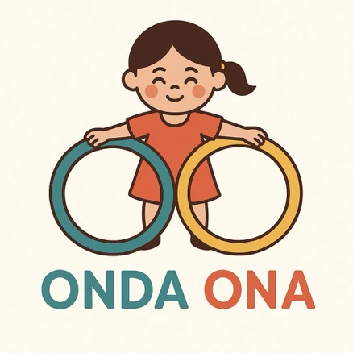
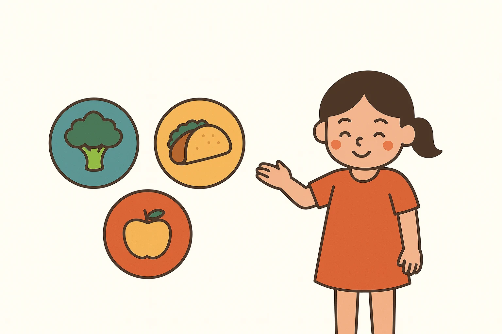
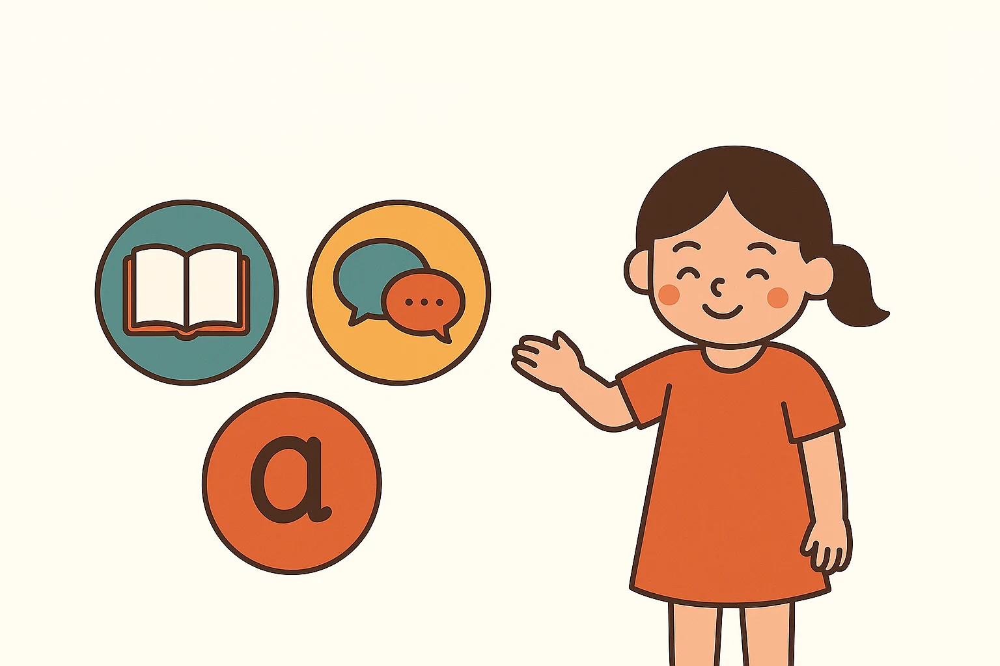
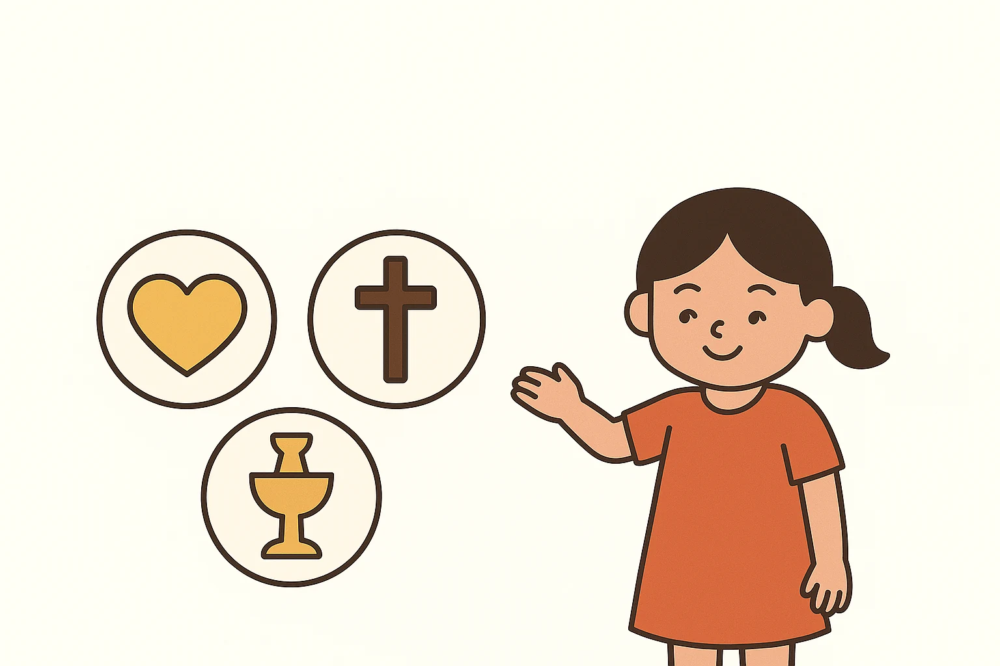
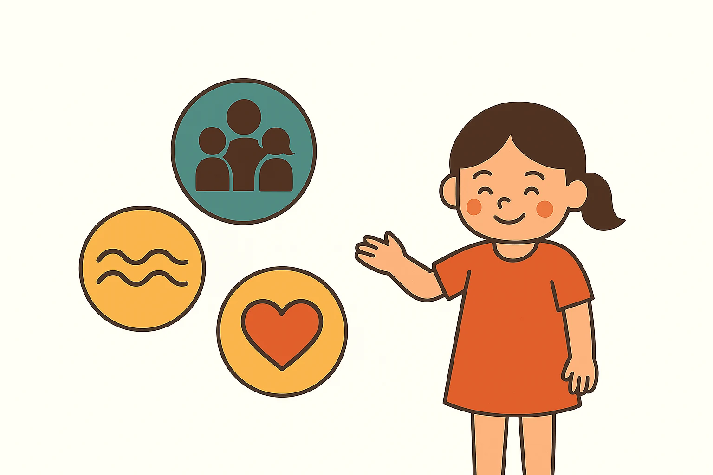

Onda Ona.
Crecer juntos,
compartir culturas.
Onda Ona es una propuesta de educación intercultural para la primera infancia en el País Vasco. Une escuela y familias en torno a tres experiencias cotidianas —alimentarnos, comunicarnos y convivir con respeto— para que cada niño y niña encuentre un espacio de pertenencia sin renunciar a sus raíces.
Descubre la propuesta ↗
Una buena onda
que se comparte.
Su nombre enlaza la expresión latinoamericana «buena onda» con «ona», «buena» en euskera. La propuesta busca favorecer la participación de familias latinoamericanas y el encuentro entre familias de distintos orígenes en Álava, Bizkaia y Gipuzkoa. Cada familia tiene una historia propia: integrar significa construir vínculos recíprocos y aprender unas de otras.
La familia,
en el centro.
Alimentación, idioma y sentido y valores se refuerzan mutuamente en el hogar, el aula y la comunidad.

Compartimos sabores,
aprendemos hábitos saludables.
Con talleres y propuestas sencillas para casa y la escuela, exploramos recetas y tradiciones sin jerarquizar culturas ni asociar un origen con malos hábitos alimentarios.
Propuesta de actividad: un recetario viajero con aportaciones familiares, ingredientes accesibles y alternativas según necesidades alimentarias. El intercambio de recetas vascas y latinoamericanas invita a hablar de variedad, desayunos equilibrados y consumo de azúcar sin juicios sobre los cuerpos.

Cada lengua
abre una puerta.
Valoramos el castellano y otras lenguas familiares, y acercamos el euskera mediante el juego, los cuentos, la música y la colaboración con las familias.
Propuesta de actividad: una maleta de cuentos y canciones en distintas lenguas, acompañada de imágenes y gestos. Cada familia puede contribuir como le resulte posible; conocer euskera no será un requisito para participar.

Crecer
en el respeto.
Reconocemos las creencias, las tradiciones y las convicciones no religiosas como parte de la diversidad, promoviendo empatía, libertad de conciencia y diálogo entre familias.
Propuesta de actividad: un círculo de relatos sobre lo que nos hace sentir cuidados, las celebraciones y las formas de ayudar a otras personas. La ilustración original evoca una tradición cristiana; el proyecto se abre por igual a otras creencias y a personas no creyentes, sin adoctrinamiento ni privilegios confesionales.
Encontrarnos.
Escucharnos.
Aprender en común.
Un futuro espacio para que madres, padres y personas cuidadoras compartan experiencias y construyan puentes con la escuela: talleres, encuentros, apoyo mutuo y actividades diseñadas junto a docentes.
Horarios laborales, conciliación, idioma y recursos pueden limitar la participación. Por eso se plantean formatos flexibles y aportaciones voluntarias: ninguna familia quedaría excluida por no poder asistir.

Pequeños encuentros,
vínculos que crecen.
Participación
Facilitar la colaboración entre familias y escuela desde posibilidades diversas.
Pertenencia
Reconocer lenguas, culturas y convicciones sin tratar a las familias como grupos homogéneos.
Bienestar
Explorar hábitos cotidianos de cuidado y relaciones basadas en la escucha.
Los ODS orientan la propuesta; no implican aval de Naciones Unidas. Onda Ona está en fase de desarrollo: las actividades y el grupo de familias se presentan como propuestas, sin resultados de implementación atribuidos.
Consultar los Objetivos de Desarrollo Sostenible ↗